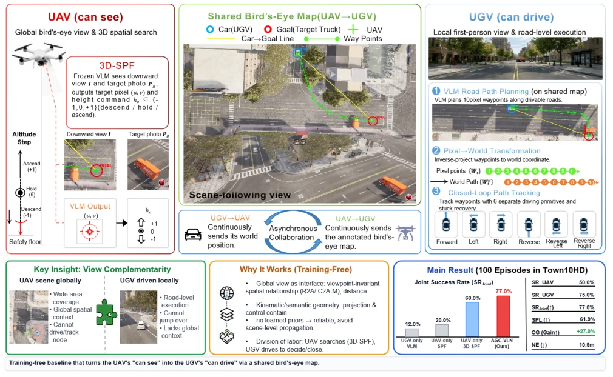
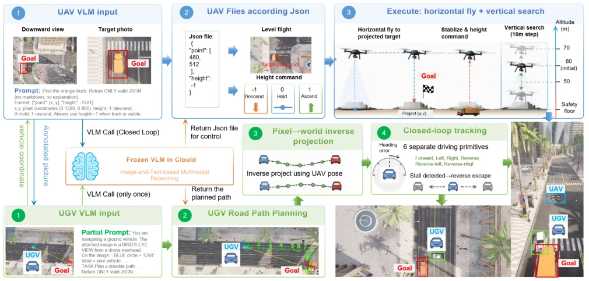
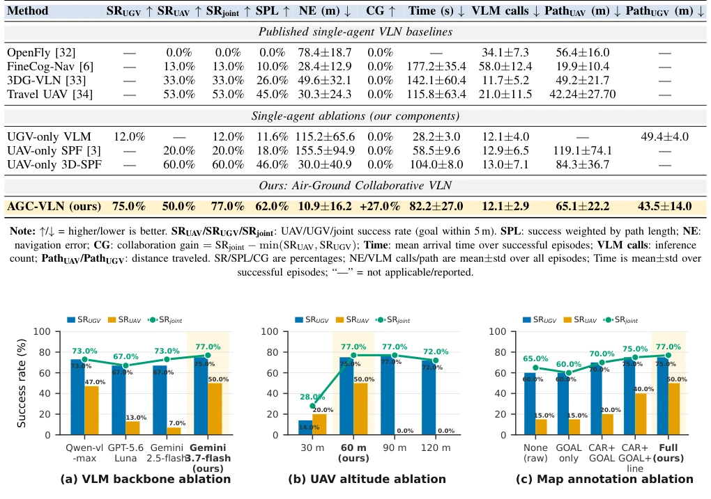
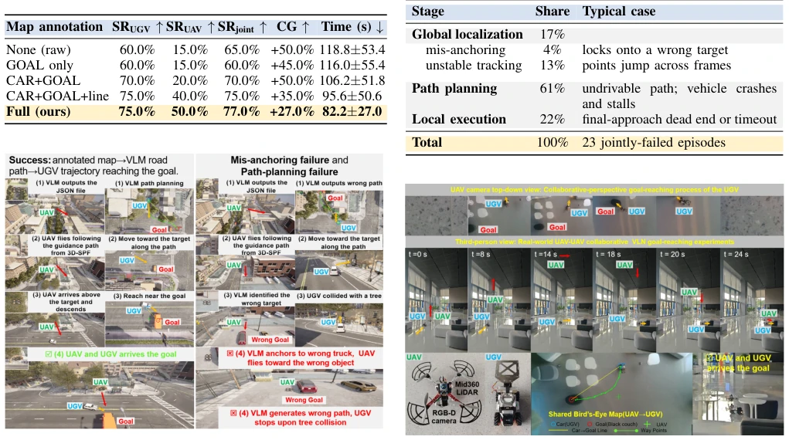

This paper pours cold water on and serves a bowl of hot soup to "training-free" embodied navigation. The cold part is that existing VLA models are basically "blind men touching an elephant" in air-ground collaboration, even hindering each other [11]. The hot part is that the authors did not pursue complex cross-agent learning, but instead used a shared Bird's Eye Map (BEM) to weld together the "seeing" UAV and the "drivable" ground vehicle. AGC-VLN achieved a 77% joint success rate on CARLA-Air, with collaboration gains up to 27%, indeed stronger than working alone. But there are also many drawbacks: relying on the anchoring capability of frozen VLM, once the UAV misidentifies the vehicle (mis-anchoring), the whole team fails; whether synchronized poses in the simulation environment can be maintained on real machines is also a question mark. Overall, this is a clever "local steel smelting" solution, avoiding catastrophic coupling of end-to-end learning through geometric certainty, but still far from robustness.
The next natural step for embodied navigation is multi-agent collaboration, especially heterogeneous air-ground teams. However, existing training-free methods mostly focus on single agents, while training-based VLA models perform poorly in collaboration. CARLA-Air evaluation [11] states frankly: five SOTA aerial VLA models cannot translate single-agent skills into collaborative behaviors, and even simple semantic communication or bidirectional coupling exacerbates errors. The root cause lies in the lack of partner-state anchoring and team-level goal alignment. This paper aims to fill this gap, proving that air-ground collaboration can be achieved through view complementarity without training, solving the contradiction of "UAV sees all but cannot drive, ground vehicle can drive but cannot see the global".

Fig. 1. The UAV turns its “can see” into the UGV’s “can drive”. View asymmetry: the UAV sees the whole block from a global bird’s-eye view while the UGV drives with a local first-person view. Shared map: the UAV renders the UGV pose and the VLM-anchored target as CAR/GOAL markers into a shared bird’s-eye map. Parallel execution: the UAV flies 3D-SPF toward the target while the UGV follows a VLM road path on the map, and either arriving counts as success, a training-free air-ground collaboration.
The overall framework is training-free parallel collaboration. The UAV module is responsible for global perception and map rendering: through 3D-SPF algorithm upgrade, VLM outputs not only target pixels but also discrete height commands (descend/hold/ascend), achieving 3D space search. Meanwhile, UAV renders its own pose, UGV reported pose, and VLM anchored target into a Shared Bird's Eye Map (BEM), containing CAR/GOAL markers and distance labels. The UGV module is responsible for path planning and execution: after receiving BEM, frozen VLM plans path points along roads on the map, reprojects to world coordinates, and tracks via closed-loop controller. Collaboration mechanism is based on view complementarity: UAV provides global spatial context missing in UGV first-person view, UGV executes using road topology. Coordinate conversion is completed via one calibration offset, ensuring geometric certainty and avoiding error propagation.

Fig. 2. Architecture of AGC-VLN. On the UAV side, 3D-SPF queries a frozen VLM in closed loop to localize the target in the downward view from the target photo, returning a JSON point and a height command (descend/hold/ascend) that drive horizontal flight and 10 m-step vertical search; it renders the UGV pose and the VLM-anchored target as CAR/GOAL markers into a shared bird’s-eye map. On the UGV side (right), a frozen VLM plans a road path on the map, which is inverse-projected to world coordinates and tracked by a closed-loop controller with six driving primitives and stuck recovery.
Experiments were conducted in CARLA-Air Town10HD scenario, 100 closed-loop episodes. Baselines include published single-agent methods (e.g., Travel UAV [34]) and single-agent ablations (UGV-only VLM, UAV-only 3D-SPF). Main metrics are Joint Success Rate (SRjoint), Collaboration Gain (CG). AGC-VLN reached 77.0% Joint Success Rate, 24 percentage points better than the strongest single-agent baseline, Collaboration Gain +27.0%. Ablation experiments show: VLM backbone (gemini-3.7-flash) has significant impact; UAV height 60m is best, too high or low causes localization failure; map annotation richness (CAR+GOAL+distance) is crucial, GOAL marker only is even worse than no annotation. Failure analysis indicates that path planning (61%) and global localization (17%) are the main bottlenecks.

Fig. 3. Ablation across the three design axes. (a) VLM backbone (Qwen-vl-max, GPT-5.6 Luna, Gemini 2.5-flash, and Gemini 3.7-flash). (b) UAV initial altitude (30/60/90/120 m). (c) Map annotation richness (raw, goal-only, CAR+GOAL, CAR+GOAL+line, and full). Each panel reports SRjoint (green line) together with the per-agent success rates SRUGV and SRUAV (bars), with percentage value labels and the adopted configuration (“ours”) highlighted.
其他图片Other Figures

Fig. 4. Representative episodes. Success: the annotated map drives a VLM road path that the UGV tracks to the goal, with the UAV and UGV both arriving. Mis-anchoring failure: the UAV’s VLM anchors onto a similar but wrong truck and flies toward the wrong object. Path-planning failure: the UGV’s VLM plans a path that collides with a tree, stalling the UGV.